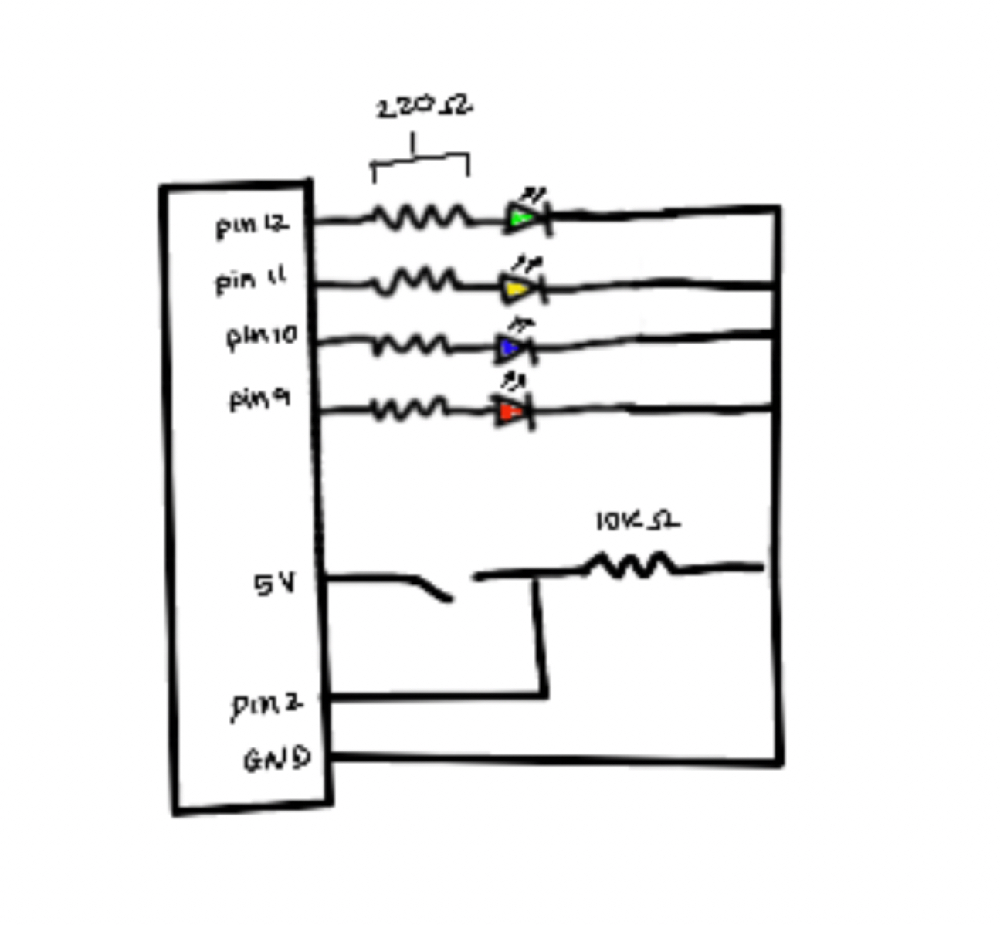
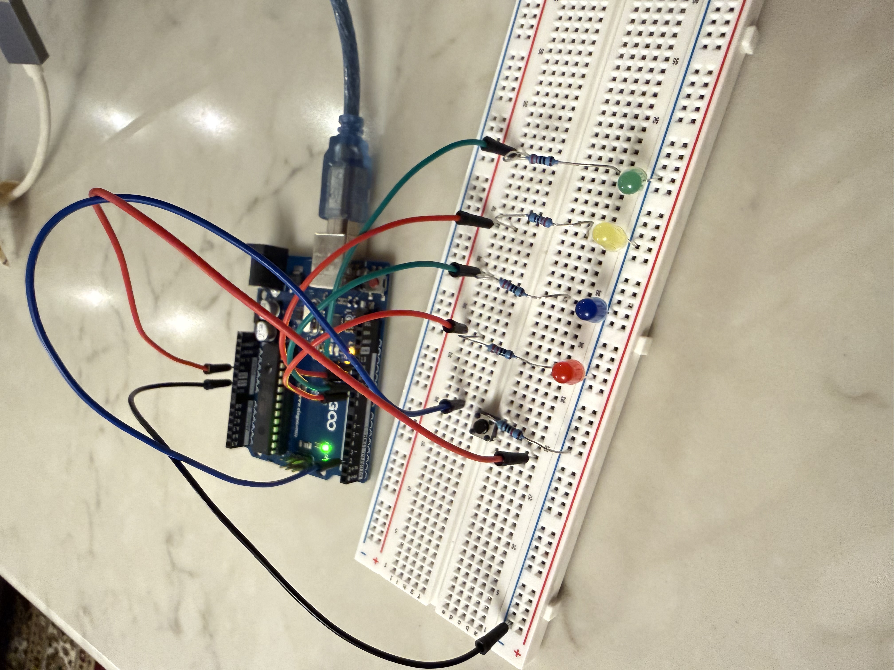
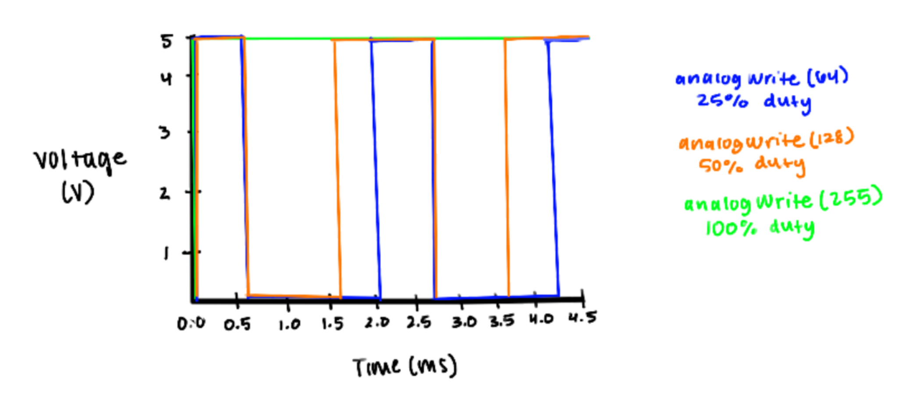

Schematic

Each LED is connected to a digital output pin (9–12) through a 220Ω resistor to limit current. A pushbutton is connected to digital pin 2 using a pull-down resistor configuration (input reads LOW when unpressed and HIGH when pressed) with 10k resistor.
Circuit

The breadboard layout mirrors the schematic, with each LED connected in series with a resistor and pushbutton using pull-down resistor, as well as all sharing a common ground.
Code
/*
Anita's Toy for HCDE 439 A2
Buttons!!
*/
// CONSTANTS
const int buttonPin = 2; // pushbutton pin
const int redLED = 9; // red LED pin
const int blueLED = 10; // blue LED pin
const int yellowLED = 11; // yellow LED pin
const int greenLED = 12; // green LED pin
const int ledPins[] = {redLED, blueLED, yellowLED, greenLED}; // array of all LEDs
const int numLEDs = 4; // number of total LEDs
// VARIABLES
int buttonState = 0; // current pushbutton status
int prevButtonState = buttonState; // previous pushbutton status
int ledIndex = 0; // which LED is currently active
// SETUP FUNCTION
void setup() {
pinMode(redLED, OUTPUT); // initialize red LED pin as an output
pinMode(blueLED, OUTPUT); // initialize blue LED pin as an output
pinMode(yellowLED, OUTPUT); // initialize yellow LED pin as an output
pinMode(greenLED, OUTPUT); // initialize green LED pin as an output
pinMode(buttonPin, INPUT); // initialize the pushbutton pin as an input
}
// LOOP FUNCTION
void loop() {
// read the state of the pushbutton value
buttonState = digitalRead(buttonPin);
// detect when button goes from LOW to HIGH
if (prevButtonState == LOW && buttonState == HIGH) {
// fade out all LEDs
for (int i = 0; i < numLEDs; i++) { // loop through each LED
for (int b = 255; b >= 0; b -= 5) { // decrease brightness level from 0-255
analogWrite(ledPins[i], b); // set brightness
delay(10); // short delay to see the fade action
}
}
// fade in the current LED
for (int b = 0; b <= 255; b += 5) { // increase brightness level from 0-255
analogWrite(ledPins[ledIndex], b); // set brightness
delay(10); // short delay to see the fade action
}
// move to the next LED for the next press
ledIndex = (ledIndex + 1) % numLEDs;
}
// save the button state for the next loop
prevButtonState = buttonState;
}
Circuit Operation

When pressing the button, the current LED fades out, cycles through all LEDs, and the next LED in line fades in. Pressing again cycles through all four LEDs.
Questions
1: Voltage across the LEDs.

The chart shows the voltage across an LED with different PWM values:
- analogWrite(led, 64) - 25% (~1.25V average),
- analogWrite(led, 128) - 50% (~2.5V average),
- analogWrite(led, 255) - 100% (~5V, full).
2: If all your LEDs were on simultaneously, what would the total current draw be? Is this above or below the total Arduino current draw limits? If all your LEDs were on, how long would your circuit run if powered by a 1200 mAh battery?
The circuit would run for approximately 15 hours on a 1200 mAh battery!
We know:
- Each LED ≈ 20 mA > 4 LED ≈ 80 mA total
- Battery capacity = 1200 mAh
Calculating battery life:
- Battery life = battery capacity / total current draw
- Battery life = 1200 mAh / 80 mA
- Battery life = 15 hours
3: How does the actual voltage of one of the LEDs when it's on compare to the theoretical forward voltage for your LED color?
The actual voltage of my red and yellow LEDs were 1.9 volts, which is close to the theoretical forward voltage typically around 1.8-2.2 volts. The green and blue LEDs measured at 2.7 and 2.8 volts respectively, which landed a littler lower than the theoretical forward voltage around 2.5-3.3 volts.
4: Did you use AI tools in completing this assignment?
I used AI tools help me learn how to make the LEDs fade from one to another when writing the code by looping through brightness levels.